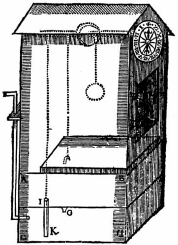

根据英国当时使用的历法，牛顿出生于1642年的圣诞节（在欧洲大陆的大部分地区是1643年1月4日）。在他出生后的头十年里，英国经历了可怕的内战。17世纪40年代，议会军与保皇军之间爆发战争，结果将查理一世于1649年1月送上了断头台。牛顿的舅舅和继父都是地方教区的教区长。在国会召集教会当局检查宗教“虐待”情况的过程中，他们两人似乎并没受到什么折磨。十多岁的时候，牛顿生活在激进的、信奉新教的共和政体下。到了1660年，查理二世复辟，共和政体被取代了。牛顿出身于一个相对殷实的家庭，在一种浓厚的宗教氛围中长大。牛顿的父亲也叫艾萨克，他是一个自耕农，在1639年12月继承了林肯郡伍尔索普教区的一片土地和一座很气派的庄园。牛顿的母亲汉娜·艾斯库来自下层乡绅家庭，似乎仅仅受过一点基本教育（不过这在那时是比较普遍的）。不过，她弟弟威廉却是17世纪30年代剑桥大学三一学院的毕业生。后来，在送牛顿去上三一学院的过程中，威廉发挥了很大的作用。
牛顿的父亲（他显然连自己的名字都不会写）死于1642年10月初，当时离儿子出生还有将近三个月时间。牛顿曾对孔杜伊特讲，他刚生下来时瘦小孱弱，一副病态，人们都认为他活不长久。家里打发两个妇人到当地一位贵妇那里寻求帮助，结果她俩却在半路上坐下来休息，因为她们肯定等自己返回时那个婴儿已经死了。然而，命运多舛的牛顿还是活了下来。母亲把牛顿抚养到三岁的时候，当地一位上了年纪的教区牧师巴纳巴斯·史密斯向她求婚。史密斯牧师很富有，他答应会给汉娜的头生子牛顿遗留一些土地，于是汉娜就在1646年1月和史密斯结婚了。从那以后，一直到史密斯1653年去世，汉娜大部分时间都和后夫生活在一起，而且为他生育了三个孩子（其中一个就是凯瑟琳·孔杜伊特的母亲）。虽然约翰·孔杜伊特用抒情的笔调描写了汉娜的品德，并且很细心地指出汉娜是一位对所有的孩子“都很溺爱的母亲”，但同时强调她最钟爱的还是小艾萨克。无论这话的真实性如何，来自牛顿自己的证据则表明他少年时与母亲的关系非常不好。此外，在长达七年的时间里，汉娜实际上都将牛顿留在伍尔索普由外婆抚养，历史学家一直觉得很难将这一事实与孔杜伊特的描述协调起来。
牛顿先后就读于当地的两所小学，十二岁后进入格兰瑟姆文法公学读书。他寄宿在当地的一位药剂师约瑟夫·克拉克家中。克拉克的药房成了牛顿获取信息的一个大好来源。克拉克的一位后代告诉威廉·斯蒂克利，牛顿对店中大量的药品和化学制品表现出了极大的兴趣。斯蒂克利写道，牛顿曾花了大量时间来收集药草，还很可能向克拉克的学徒了解过这些药草的属性。牛顿当时和克拉克的继子女生活在一起。这些继子女中有一位叫凯瑟琳——也就是后来的文森特夫人，她提供了有关这位神童的大量信息。斯蒂克利遇到的每个人都会向他叙说牛顿制造机器的“天赋和非凡的创造性”。他们这样告诉他：“放学后，牛顿不跟其他男孩一起玩耍，而总是在家里忙个不停，随心所欲地制作各种各样的小玩意儿和木头模型。”文森特夫人称自己就是那位年轻的发明家当年关注、爱慕的对象。根据她的记录，牛顿的同学“并不十分喜欢”牛顿，因为他们知道牛顿要比他们“心灵手巧得多”。小艾萨克“一直”都是“一个严肃、沉默寡言而善于思考的少年”。他从不跟男孩子一起玩耍，但偶尔会做一些玩具小屋中摆放的家具，给女孩子“摆放玩偶和悬挂小饰品”。
牛顿将母亲给他的钱都用来购置锯子、凿子、手斧、锤子之类的工具，并慢慢在格兰瑟姆建起了“一家齐备的工具店”。“他用起这些工具来得心应手，好像生来就是干这一行似的。”文森特夫人描述过的那些机器以及牛顿制作的其他机器，其设计构思大都源自约翰·巴特的《自然与艺术的奥秘》一书。《自然与艺术的奥秘》属于当时极为流行的“数学魔术”一类的书籍，其中包含了无数制作机器的法子和图画。那时的牛顿已不甘于按部就班地利用书中的信息，而总要大大发挥一番才行。由于不满足于按照巴特的描述复制一个简单的风车，牛顿曾专门跑到附近一个村子里观摩制造一架真正风车的过程。他“天天跟工匠们待在一起”，“非常准确地掌握了风车的制作机理，然后自己制作了一个真正的、完美的风车模型”。不仅如此，牛顿还超越了他的风车样板。他改变了风车的机理，竟让一只老鼠来驱动风车的翼板——老鼠为了够着谷物，只得不停地推动一只轮子。虽然给斯蒂克利提供信息的人对风车的准确机理有着不同的说法，但他们都一致说当时人们会从几英里外赶来观看艾萨克的“老鼠磨工”。斯蒂克利敏锐地指出，牛顿往往会专注于“滑稽的”（即“好玩的”）发明。除了老鼠磨工和玩偶家具之外，牛顿还研究过一个简单风筝的结构和尺寸，然后做了一个更好的风筝，拴上一个点燃蜡烛的灯笼放飞。这个风筝曾一度引起当地人的惊恐，给了他们许多饭余酒后的谈资。
牛顿还造了一个木钟，而且就像他制作风车和风筝那样，紧接着又造了一个更好的。改进后的木钟带有一个钟盘，由涓涓细流来驱动，而水是他每天早晨加进去的。这个木钟是牛顿用汉弗莱·巴宾顿送给他的一个箱子改做的。巴宾顿是克拉克夫人的弟弟（克拉克夫人是汉娜·史密斯的好友），他因为拒绝宣誓效忠共和政体而被三一学院开除。在以后的几十年中，巴宾顿将在牛顿的生活中扮演一个重要的角色。此外，牛顿还进一步发挥自己的艺术天分，着手制作复杂的日晷，在克拉克家房子外部的许多地方刻画了各种各样的时钟。根据斯蒂克利的记载，牛顿“画了长长的线条，在上面系上穿有滚球的长线；在墙上插入栓子，以标明小时、半小时以及一刻钟。凡此种种都显示了他思维的深度与广度”。牛顿还用这些线条做了一本“年历”，“根据线条就能知道是某月的第几日，太阳进入各宫的时间，以及二分点与二至点”。与牛顿的其他发明一样，“艾萨克的日晷”在当地教区也非常出名。这些发明也许是少年牛顿最伟大的成就。斯蒂克利认为它们就是牛顿醉心于天体运动的开端。
牛顿在艺术方面也很出色，比如在素描方面，甚至在作诗方面——虽然他对诗歌的兴趣仅仅持续了一小段时间。牛顿在自己所住阁楼的墙上用木炭画满了动物、人物和植物的素描以及数学图形，还将自己的名字刻画在隔板上。在20世纪中叶，人们在伍尔索普庄园的石雕上发现了蚀刻的几何图画，这无疑也是牛顿的杰作。
在1659年购买的一本笔记本上，牛顿作了一系列有关巴特那本著作的笔记，从中可以看出牛顿当时的艺术倾向。这些笔记显示出牛顿比较关注素描的实用方面，还表明牛顿对如何利用动物、植物和矿物或者通过混合几种现有颜色来制作各种彩色墨水和颜料比较感兴趣。仅仅十多年之后，牛顿就因混合现有颜色生成新的颜色而闻名遐迩。笔记本中摘录的其他一些说明涉及鱼饵制作以及通过迷醉手段捕鸟的种种方法——这些方法并非全都很复杂。巴特的书中还有一些配制万能软膏和药膏的配方，牛顿也记下了好几种。实际上，在剑桥和牛顿做过二十年室友的约翰·威金斯后来回忆起的几件事情之一就是：牛顿经常会拿一种自制的、令人作呕的调和物（“卢卡泰诺香膏”）来作防腐剂。还有一些笔记来自约翰·威金斯的《数学魔术》。这是一本当时流行的著作，其中提供的信息与巴特的书类似。笔记本中的其他笔记提到了产生永动的不同方法，而永动是牛顿以后几十年中都一直极感兴趣的一个题目。
心灵手巧的牛顿沉浸在实用创造的世界中，这不仅预示了他非凡的未来，而且直接造就了他非凡的未来。实际上，对于牛顿早期所痴迷的活动与他后来所取得的成功之间有着怎样的联系，斯蒂克利有过极为出色的描述。他指出，少年牛顿能够娴熟地使用机械工具，加之具有素描与设计的专长，这对他后来拥有出色的实验技能帮助极大，“给他打下了运用自己强大推理能力的坚实基础”。非常罕见的是，牛顿具有成为一位伟大自然哲学家的所有素质，诸如“深邃的洞察力”，“坚定不移、百折不挠的解决问题的精神”，“延伸其推论［与］演绎链的巨大思维力量”，“无与伦比的代数技能以及其他使用符号的方法”。与所有的孩子一样，牛顿也很喜欢模仿他人。但在斯蒂克利看来，“他实际上就是一位天生的哲学家。学习、机遇和勤奋给他的洞察之眼指出了一些为数不多的、简单而普遍的真理”。他逐步拓展这些真理，“终于揭示了宏观世界的体系”。

图2 牛顿借以制造水力钟的原始设计图。摘自约翰·巴特的《自然与艺术的奥秘》。
这位极具天赋的乡下男孩虽然热衷于制造种种器具，但却在郁郁寡欢中度过了青少年时代。1662年5月底，牛顿用速记法记下了他在前十年中犯下的所有罪行；有一小段时间，他还记下了自己在剑桥的所有不端行为。虽然拿“清教教义”这个词来形容牛顿信奉的宗教教义是完全不当的，但如果用与这个词相关的那些激进的新教伦理价值观来形容这些条目所反映的牛顿，则是再恰当不过的。牛顿记下的许多罪行都是他在虔诚的基督徒理应休息的安息日（“主日”）所做的一些事情。在17世纪50年代的许多个星期天，他要么读一本无关紧要的书，要么在小教堂中吃一个苹果，要么做一个滑键、一个钟表、一个捕鼠器或搓一截绳子，在晚间还会做一些馅饼。牛顿承认在上帝之日有过“无聊的谈话”，所以他也会在不经意间听到并记下许多训诫，这是不足为奇的。牛顿还写道他有一次完全错过了礼拜仪式。有时候，他将心思用在学习和钱财上，更喜欢“世俗的东西”，而没有将上帝放在心上。的确，牛顿记下的许多罪行都涉及他没能像一个虔诚的人那样生活的情形。“因为没能按照自己的信仰生活”，而且“疏于祈祷”，所以他远离了上帝。他没做到为了上帝而爱上帝，没有达到“渴望”上帝规诫的程度。
有些小插曲与村里其他孩子的经历也没有什么不同。牛顿曾在另一个男孩的帽子中放大头针“戳”人家，妈妈让他回家时拒绝回家，藏有一把石弓却向妈妈和外婆撒谎说没有。在其他时候，他还会跟仆人“闹翻”。有关食物的罪行也很突出。牛顿从克拉克的继子爱德华·斯托勒那里偷过樱桃棒，从妈妈的食品盒里偷过李子和糖。他还承认在病中暴饮暴食，实际上，在他所列的在剑桥求学时所犯的罪行清单上，头几条就是暴饮暴食。第一张罪行单上的其他评语描绘了牛顿心灵的阴暗面。他用拳打过自己的一个妹妹，殴打过“多人”，还狠揍过爱德华的弟弟阿瑟·斯托勒。牛顿的单子上还有“有过不洁的思想，说过不洁的话，有过不洁的行为，做过不洁的梦”，但其具体含义不详。牛顿还悔恨地写道他曾通过“非法的途径”使自己摆脱“忧伤”，但其具体所指也不清楚。牛顿还记得自己曾“希望死亡降临到一些人身上，诅咒他们死去”。最令人震惊的是，他还隐约记得曾经威胁要将继父和母亲连同他们的房子一起烧掉。这些都表明牛顿怀有强烈的憎恨。牛顿还编了一份常用词名单，依照弗朗西斯·格雷戈里1651年的《简明名词词典》的样式按字母进行排序。在“父亲”、“妻子”、“寡妇”等词后，牛顿加了“私通者”、“娼妓”等词——这些词是格雷戈里的书中所没有的，可能表达了他对母亲和继父的看法。
牛顿的愤怒还体现在生活的其他方面。孔杜伊特对牛顿相当熟悉，他认为从学业生涯之初开始，牛顿就在怨恨之心和竞争之念这两大力量的驱使下，一门心思要超过其他所有人。牛顿经常会对孔杜伊特讲一件他进入文法公学不久发生的事情。这个故事可能与他对于狠揍阿瑟·斯托勒的“供认”有关。当时，牛顿是班上垫底的学生。有一天，在上学的路上，一个同学踢了牛顿的肚子。放学后，他就和这个攻击者在教堂墓地打了一架。虽然牛顿“没有对手健壮，但他斗志昂扬，意志坚决，一直打到对手停手求饶为止”。随后，在校长儿子的唆使下，牛顿还强行将对手的脸抵到教堂的侧墙上。从此以后，牛顿开始发奋努力，在学习上赶超对手，终于在成绩名次上排到了对手的前面。而且更绝的是，他还一举成了全校拔尖的学生。
牛顿的课外活动会对他的学习产生消极的影响。但是只要他愿意，他就可以随时捡起功课，一举超越同学。牛顿就有这种本事。斯蒂克利写道：“有时候，一些愚笨的男孩会在排名上超过牛顿，但这往往会激励牛顿加倍努力，反超他们。”校长约翰·斯托克斯好像在早期就发现了牛顿的天赋。他曾经温言劝告牛顿以功课为重，但仍然无法让这个少年放开手中的锤子和锯子。可是，到了1659年下半年，牛顿的母亲决定让牛顿辍学，回家料理自家的庄园，并让一位可靠的仆人照看着牛顿。尽管如此，牛顿还是痴迷于制造水车与其他模型，而且一读起书来就会忘掉一切，根本无法胜任料理庄园的任务。他负责照看的牛羊会闯进附近的田地。有记录表明，这年10月他还因此被罚过款。牛顿还常常忘记吃饭；用斯蒂克利的话来说，“他整个心思都扑在哲学上了”。
各种传记在写到牛顿此时的发展时，都不再将他描写成一位极具天赋的技工，而会开始将他描绘成一位超脱的学者。后来，有好几样不同的证据表明，到牛顿前去剑桥求学的时候，他已经因自己超脱的行为或“愚钝的”行为而闻名乡里了。作为家务管理者，牛顿的确不可救药。他会贿赂仆人来代替他，而本人则跑到上学时寄宿过的那间阁楼里去寻求学者式的避难，全神贯注地阅读堆放在那里的医学书籍和科学书籍。在其他时候，他干脆就躺到篱笆或树下看书。还有一次，他拉的马挣脱了笼头，而他却一个劲地埋头看书，走了好几英里路都没有觉察。牛顿的母亲“对他的这种书生气怒不可遏”，而仆人们则称他为“一个傻小子”，认为他“永远都不会有什么作为”。
这时，校长斯托克斯向牛顿伸出了援手。斯托克斯告诉汉娜，牛顿极具天赋，不应埋没于“乡村俗务”中。他看到了“这个少年的非凡才能，惊叹于他的惊人发明、心灵手巧以及远远超过他的年龄的奇妙洞察力”。他还告诉汉娜，牛顿“将成为一位非常了不起的人”。斯托克斯还提出愿意免除牛顿的膳食费，这一点可能是促使汉娜同意儿子返回文法公学、预备上大学的关键因素。牛顿于1660年秋返校，并接受了拉丁语和希腊语的额外训练。在牛顿毕业离校的那一天，斯托克斯为他举行了一场激动人心的欢送会，据说还让学校的其他学生热泪盈眶。不过，斯蒂克利写道，仆人们可没有感受到这种情感，他们断言牛顿“一无是处，只配上上大学”。
到毕业的时候，牛顿将上剑桥三一学院的事情已经定了下来。三一学院是英国当时最有声望的学院。在将牛顿送入三一学院的过程中，威廉·艾斯库和新近恢复了三一学院研究员身份的汉弗莱·巴宾顿的共同努力也许发挥了决定性的作用。1661年6月5日，牛顿以“减费生”这一接近仆役的身份进入剑桥。牛顿的低级身份与他母亲拥有的财富显得很不相称，令人奇怪。减费生须负担自己的膳食并参加讲座。他们实际上就是研究员或富有学生的仆人。牛顿可能以减费生的身份服侍过巴宾顿——虽然仅仅是在名义上。此前一年春天，查理二世复辟，剑桥市民和大学师生对此作出了迅速而积极的响应。在学校的高级职位上，保王党的支持者取代了共和政体任命的人员。1662年，国教学者，极具影响的《信经讲解》（1659）的作者约翰·皮尔逊成为三一学院院长。在他的领导下，三一学院强调更为传统的学术形式，尤其注重神学方面的学习。
牛顿在大学里是如何花钱和打发时间的呢？来自一个小笔记本的证据让人们能对此有所了解。笔记本开头的一些条目表明，牛顿购买了书籍、纸张、钢笔、墨水等基本学习用品以及在17世纪的学生住宿条件下所需的一般生活用品，如衣服、鞋子、蜡烛、一把课桌锁、一张屋内地毯，还有一个夜壶。牛顿还买了一块手表、一个棋盘，后来又买了一套棋子（据凯瑟琳·孔杜伊特说，牛顿玩起棋盘游戏来得心应手），并付了七个便士作为使用网球场的年费。笔记本中还有“去舞会和游艇”的条目，并且在后面重复出现，表明牛顿在剑桥的第一年并没有将每时每刻都花在学习上。的确，牛顿还另列了一个“琐碎”而“浪费”的开销单子，上面有购买樱桃、啤酒、柑橘酱、奶油饼、蛋糕、牛奶、黄油和干酪的记录。后来，他还买过苹果、梨和炖梅脯。
很快，牛顿就开始给他的宿舍清洁员和同学放债——从现存的学生记录来看，这在当时的大学生中是非常罕见的。向牛顿借钱的同学有许多都是“自费生”，他们在大学中的社会地位要略高于牛顿。绝大多数得到牛顿慷慨借款的人都偿还了借款，这一点可从牛顿在相关记录上所划的叉号看出。大约是在1663年的某个时间，牛顿认识了另一个自费生约翰·威金斯（他儿子尼古拉斯写道，他父亲当时发现牛顿“孤独而沮丧”），随后两人决定合住一室。威金斯还会时不时地充当牛顿的誊写员。两人一直合住到1683年，是年威金斯离开剑桥，到教会担任了一个职位。约翰·威金斯曾告诉儿子尼古拉斯·威金斯，牛顿工作起来常会忘记吃饭，而且在早晨起床时“精神饱满，为发现了某个命题而心满意足；似乎一点也不在乎晚上的睡眠，或者晚上根本不需要睡觉似的”。如果牛顿的回忆准确的话，他应该就是在遇到威金斯的那一年迷上“决疑占星学” [4] 的，而且还买了一本关于占星术的书。所谓决疑占星学，就是通过研究恒星和行星的位置来评估个人前途未来的学问。可是，牛顿对占星术并不满意，于是在次年转而研究欧几里得的数学，但不久又丢开了，因为他觉得欧氏数学无足轻重、过于浅显。
牛顿可能听过艾萨克·巴罗于1664年3月首次开讲的卢卡斯数学讲座。巴罗是首任卢卡斯数学讲座教授，他也许曾注意到自己的听众中有一位特别专心的学生。巴罗开始数学讲座一个月后，三一学院举行了一次定期进行的奖学金竞赛。牛顿参加了这次竞赛。根据牛顿后来的叙述，他的考官就是巴罗；由于他对欧几里得的数学缺乏了解，所以巴罗对他很失望。巴罗当时绝对想象不到，这个年轻学生竟然已经钻研过笛卡儿那令人生畏的《几何学》了。牛顿当时显然很谦虚，并没有道出自己的这一成就。不过，牛顿最后还是获得了奖学金，从而拥有了好几样特权。第二年早些时候，大约就在证明广义二项式定理的同一时间，牛顿为了获得文学学士学位，不得不参加一场耗时较长的、更为标准的知识考试。后来也有一种说法，称牛顿这次考试差一点没能及格。不过，这一说法可能将这次考试和前一年的奖学金考试混为一谈了。
1665年年中，一场瘟疫席卷了英国的许多地方。牛顿和绝大多数学生一样，也在7月底或8月初回家了。1666年3月，牛顿返回剑桥，继续给许多以前向他借过钱的同学放债。然而，刚到夏天，那场瘟疫又死灰复燃，牛顿便又回到林肯郡躲避瘟疫。正是在林肯郡，而且很可能就是在巴宾顿位于布斯比帕戈内尔的家里，牛顿完成了自己绝大部分的创造性工作。1667年3月20日，牛顿从母亲那里收到十英镑。次月，牛顿返回剑桥时，母亲又给了他十英镑。在随后的一年中，牛顿将这笔钱的大部分以及他的债务人所还的大部分钱用于如下用途：购买了一些磨制工具以及进行实验的设备，买了三双鞋，打牌输钱（两次），在酒馆喝酒（两次），买了几卷早期的《哲学会报》以及托马斯·斯普拉特新出版的《皇家学会史》，给他妹妹买了一些橙子。9月，牛顿又参加了一次竞赛，这次是为了角逐大学研究员的职位。不知是由于得到了巴宾顿或巴罗的支持，还是因为牛顿的才华和对学问的执著在为期四天的口试中大放异彩，他最后被选为了副研究员。
显然，这次当选也意味着牛顿精通院长皮尔逊要求的那种神学学问。当选之后，牛顿按要求宣誓要将神学作为他研究的中心，还宣誓将来要领圣命，否则就得辞职。此后不久，牛顿就搬到一间新屋居住，并根据个人的品味装修了屋子。1668年7月，牛顿被授予文学硕士学位，这样他就可以向学院正研究员的职位靠近了。牛顿在自己的衣袍布料上花了好多钱，还购买了一顶昂贵的帽子、一套衣服、几张皮地毯、一把睡椅（与威金斯合买），并买了一些填充一张新羽绒床的材料。他还买了三个棱镜，每个一先令；还买了一些“玻璃杯”——大概是用来进行化学实验的。那年夏天晚些时候，牛顿第一次去了伦敦。不久之后，他便声名鹊起。